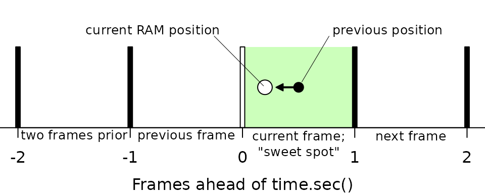
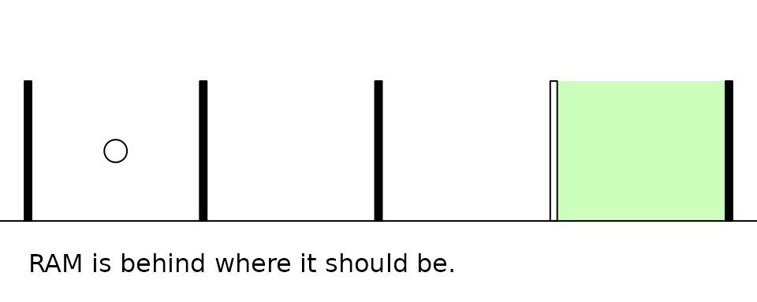
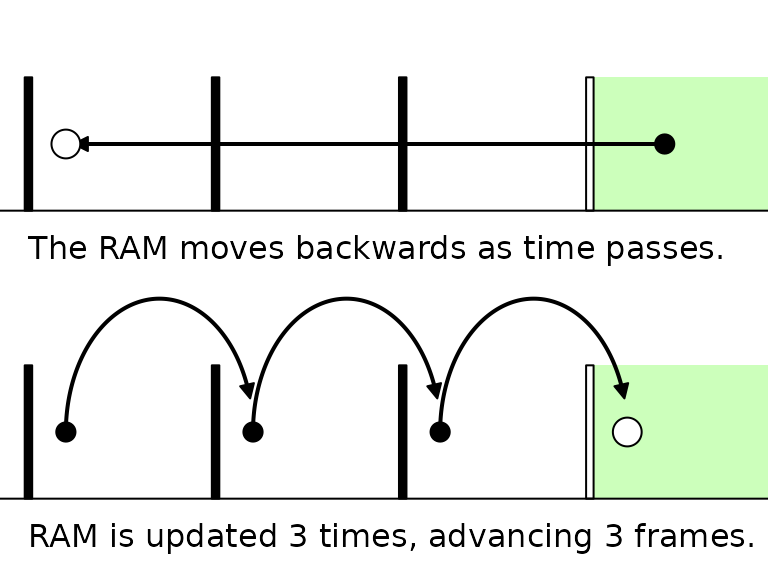
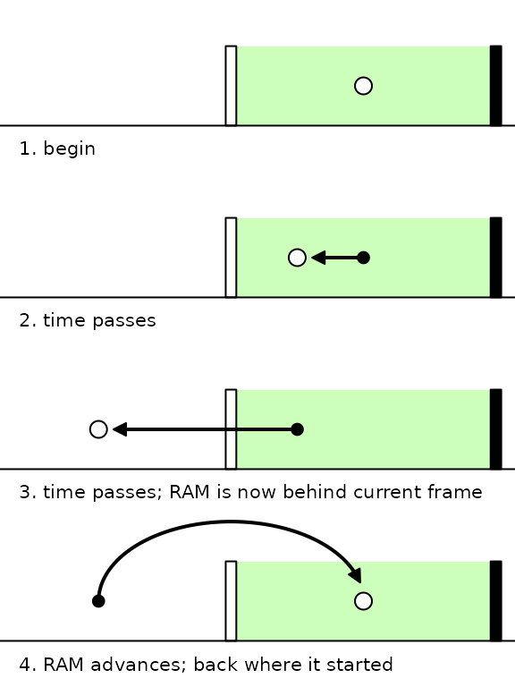
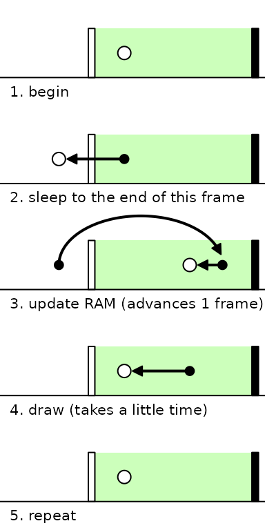
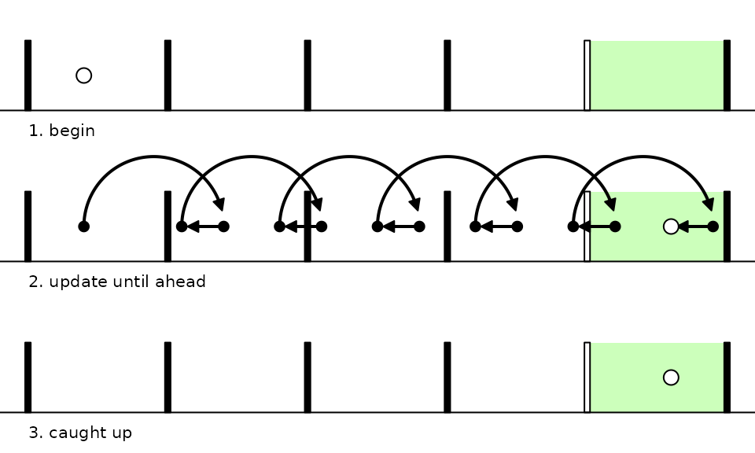

Frame Timing
timing.RmdThis article describes the intricacies of how the game runs (drawing an updating) at the desired framerate. This information is interesting for understanding the package at a deeper level but isn’t important to know for for playing or making games with the package.
I’ll give warning— timing is particularly hard to wrap one’s head around (it certainly took me a while!). I think I’ve come up with a good visual representation but it’s still quite abstract.
1. Motivation
One of the big questions when making a gaming device is “How will I get the frames to happen on time, at the right speed?” Gaming consoles in the past had to overcome significant challenges to achieve this, but modern computing systems have some conveniences that make it much easier.
rcade uses a very simple and robust timing system to
ensure that the game runs in realtime at the correct speed, by taking
advantage of base::Sys.time()’s high precision.
1.1. Goal
But first: what do we want to do on each frame? What even is a frame?
Every 1/framerate seconds, or 1/60th of a second for a
60fps (frames per second) game, we want to tick the game (iterate its
physics, game logic, etc. for one timestep), and then draw the new game
state.
A “frame” can refer to a lot of things here, but I try to use it precisely:
I use “frame” to mean “the window of time at which we want to draw a specific gamestate” or said drawing;
And a “tick” is the specific gamestate, i.e. the RAM after updating (ticking) a certain amount of times.
Drawing a frame should ONLY happen if we’re within the 1/60th window for it; this ensures that the game always looks like it runs at the same speed even if the drawing is choppy. If we run out of time to draw on a frame, we can skip the drawing step, but we want to minimize this.
Meanwhile, ticking doesn’t actually have to happen at a specific time as long as it lines up with the drawing. All we care about is that the game is drawn at the correct time, and that it’s on the right tick for when it’s drawn. Because ticking the game is usually very quick, we can just tick a bunch to catch up if it ever falls behind the current drawing window.
2. Timing Diagram
We’ll use this diagram to conceptualize the timing system. It’s a little weird, but it does a good job of representing the way the timing system works.

The vertical bars represent desired frames of the game— when we want the game to advance and draw a frame. As such, they’re spaced 1/60th of a second apart from each other (for a 60fps game).
The circle represents, roughly, where the RAM is time-wise relative to these frames1. We want it to be “ahead” (to the right) of the current frame (white bar), but not too far ahead.

As time passes, if we don’t update the RAM, it slowly drifts to the left until it’s behind the current frame. To keep it ahead, we have to update it— every update of the RAM moves it one frame ahead.

So the obvious thing to do is to just update it every time it falls behind the current frame, to get it back ahead. That’s basically how the engine works!

3. Timing Logic
Now, we also want to draw the game, and to make it feel smooth, we only want to do this when the game is “at” the current frame— ahead of the white bar. So the logic for timing the game is:
1. if within of the current frame, sleep (wait) until the game is just behind the current frame
2. update the RAM (advance a frame)
3. if within of the current frame, draw the RAM
4. repeatThis mirrors the code found in ram.update().
Notably, this has the following behavior:
- the game can never run ahead more than a frame
- if the game is behind, it repeatedly updates as fast as possible until it’s caught up
4. Examples:
The following diagrams demonstrate this behavior and the engine’s response to various scenarios, based purely on the logic defined above.
Note that updating or drawing the RAM both take a little time, but the timing logic is robust to it. Even when drawing takes more than a frame (which can happen at higher game resolutions), the engine is able to deal with it and still draw on time as frequently as possible!
4.1 Standard Loop
This is what the game does most of the time when everything is working smoothly.

4.3 Far Behind
When the RAM is far behind (e.g. right after a rollback; see
vignette("rollback")), it updates as quickly as possible to
catch up.

5. Notes
Records of salient timings can be found in RAM$debug
(see ?ram.debug) after running a game:
RAM$debug$aheadcorresponds to the x position (in seconds) of the white circle in these diagrams at the end of every logic cycle.RAM$debug$time.drawrecords the time it takes for just the draw step,ram.draw(). This can be helpful for identifying if drawing is the cause of frameskipping, as in the last example.RAM$debug$time.tickrecords the time for just the tick step,ram.tick(). This is usually instant unless your game runs a physics system with lots of complex interactions or uses the likes of a chess engine.